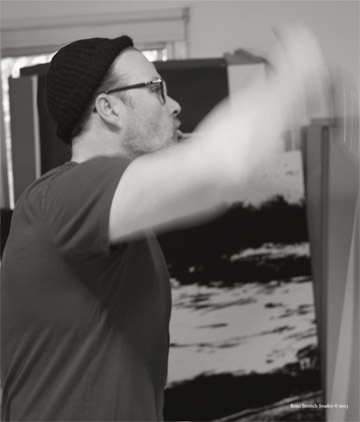

Roni Stretch was born in England in 1964. He currently lives and works in Los Angeles, California. His work has been shown extensively in America since the 1990’s, including shows at the Los Angeles County Museum of Art, the Museum of Contemporary Art at the Geffen Contemporary Museum, the Westmont Museum of Art in Santa Barbara, the Santa Monica Museum of Art and the Cooperstown Museum in New York.
“My first response to Roni Stretch’s paintings was how extraordinarily exquisite and how original. I know of nothing quite like them in the history of modern, let alone traditional art - an ingenious, convincing integration of color field painting, minimalist structure, and photorealist portraiture,” writes Donald Kuspit. The New York-based art critic and author of numerous books, including the controversial “The End of Art.” also remarks that “Stretch’s paintings are subtle, eloquent masterpieces, carrying forward the tradition of pure painting while acknowledging the inevitability of human presence and vision.”
Stretch remains one of the most sophisticated painters of his generation. He has pioneered a unique Dichromatic Process, exploring photorealistic under-paintings that emerge ghost-like from a void of color. His Dichromatic oil paintings are meticulously created by executing a layering process where by two different colors are alternately applied and built up over many weeks. The subjects play against a sharply lined border intended to ground each painting in the physical and force a visual meditation. The image is not so much painted over as optically embedded within the multiple layers of the alternating colors. Stretch’s work is a lesson in contradictions: photorealism and abstraction, light and dark, reality and altered states, smooth and rough textures all ultimately leading to an emotional experience.
Stretch’s works are held in numerous public and private collections worldwide. He has recently been included in the permanent collections of the Pasadena Museum of California Art, the Museum of California Design, the Cooperstown Museum in New York and the Museum of Contemporary Art San Diego.
SELECTED SOLO SHOWS
- 2015
- MOAH, Museum of Art and History, Lancaster, CA
- 2013
- Lamp Black, Titanium White, Scott White Gallery, La Jolla, CA.
- 2012
- Recent Works, Canvas Gallery, Malibu CA.
- 2011
- New Dichromatic Paintings, Weber Fine Art,Greenwich, Connecticut.
- 2010
- Black & White, Chryssanthou Art & Design, West Hollywood, CA.
Push and Pulled. The Edge Gallery, Santa Fe, NM.
- 2008
- Veronica’s Napkin. Deborah Page Gallery, Santa Monica, CA.
Dichromatic Paintings, Canvas, Malibu CA.
- 2007
- Dichromatic Portraits, Anne Reed Gallery, Ketchum, ID.
- 2006
- Brandenburg- Titanium White, Lamp Black, Peyton Right Gallery, Santa Fe, NM.
- 2005
- Dichromatic Portraits, Gallery C, Hermosa Beach, CA.
- 2004
- Thin Ice, Titanium White. Gallery C @ Bvlgari, Rodeo Dr, Beverly Hills CA.
- 2004
- Dichromatic Paintings & Photographs, Off Main-Media Rare Gallery in conjunction
with Steve Michel Gallery, Bergamot Station, Santa Monica, CA.
- 2003
- The Wiesman Collection - Paintings from the early 90’s, Bliss, Beverly Hills, CA.
- 2001
- Recent Paintings, Steve Michel Gallery, New York, NY.
- 1998
- Faces & Figures, Simon Schade Gallery, Los Angeles, CA.
- 1998
- California Painting, Enclave Gallery, Venice, CA.
- 1997
- New Works, International Art Gallery, Orange County, CA.
SELECTED GROUP SHOWS
- 2013
- Cooperstown Museum, New York.
Winter Salon – Roberta Moore / Mead Carney, Lloyds Club, London, UK
Art Miami, Miami, Scott White Gallery, La Jolla, CA
Roberta Moore at Mead Carney Gallery, London, UK.
Art Southampton, Scott White Gallery. La Jolla, CA.
Los Angeles Annual Benefit Auction, Gallery 825, Los Angeles, CA.
- 2012
- Art Miami, Miami, Scott White Gallery, La Jolla, CA.
“Rapture” The Parabola Arts Center, Cheltenham, England, UK.
Roberta Moore Gallery, Summer Group Show,
Scott White Gallery, Group Show, La Jolla, CA.
“Incognito” Santa Monica Museum of Art, Santa Monica CA.
- 2011
- '5x5 invitational” Westmont Museum of Art, Santa Barbara, CA.
“Incognito” Santa Monica Museum of Art, Santa Monica, CA.
Roberta Moore in association with Lisa Mackenzie Art,
MOMAC, Organic stone, The Canalside, Gloucester Quays, England, UK.
- 2010
- “Incognito” Santa Monica Museum of Art, Santa Monica, CA.
- 2009
- The Edge Gallery, Santa Fe, NM
- 2008
- Anne Reed Gallery, Ketchum, ID
- 2007
- Summer Group Show, Anne Reed Gallery, Ketchum, ID
- 2006
- “Retrospective/Prospective” Anne Reed Gallery, Ketchum, ID
- 2005
- Los Angeles County Museum of Art. AR&S, Leo S. Bing Center, Los Angeles, CA
“New Old Masters,” curated by Donald Kuspit, Gallery C, Hermosa Beach, CA
“Fresh” Museum of Contemporary Art, Geffen Contemporary, Los Angeles, CA
“Inter Acts”, Inter Gallery, Piazza Diaz 6, Milan, Italy
- 2004
- “Nine” Gallery C, Hermosa Beach, CA
SELECTED MUSEUM SHOWS AND COLLECTIONS
- Museum of Contemporary Art, San Diego, CA
- Museum of California Design, Los Angeles, CA
- Museum of Design, Art and Architecture, Culver City, Los Angeles, CA
- Cooperstown Museum and National Baseball Hall of Fame, New York.
- Los Angeles County Museum of Art, Los Angeles, CA
- Pasadena Museum of California Art, Pasadena, CA
- Santa Monica Museum of Art, Santa Monica, CA
- Westmont Museum of Art, Santa Barbara, CA
- The Geffen Contemporary at the Museum of Contemporary Art, Los Angeles, CA
SELECTED CORPORATE COLLECTIONS
- Richard Weisman Foundation, Beverly Hills, CA
- Magic Johnson Pediatric Aids Foundation, Los Angeles, CA
- California Plaza, South Grand Avenue, Los Angeles, CA
- Blue Cross / Blue Shield Corporate HQ, New York
- Dick Clark Collection, Burbank, CA
- Cooley LLP, Washington DC.
- My Brothers Keeper Corporate HQ, New York.
- The Four Seasons Collection Washington, DC
- Make -A-Wish Foundation, Los Angeles, CA
- Williams Entertainment Corporate HQ, London, England
- Soleido HQ, Paris, France
- Southern Cross Healthcare Corporate HQ, London, England
- Susan G. Komen Breast Cancer Foundation, Los Angeles, CA
- Paloma Westwood Hotel, Westwood, Los Angeles, CA
- Sunrise Children’s Hospital, Las Vegas, NV
- The Coffee Bean and Tea Leaf, Corporate HQ, Los Angeles, CA
- Wilmer Hale, New York, NY
SELECTED BIBLIOGRAPHY
- 2013
- Aesthetica Magazine, London show preview, March 7th
FAD show preview, Moving Image Feb 21st
Faith is Torment, Paintings by Roni Stretch, Jason Jose , May 24th
Culture 24, Art – London show Review, Richard Moss, March 11th
Art Rabbit, Roni Stretch show, March 7th
Cassone Magazine – “Portraits, child’s play and expressionism “ Art news March 7th
- 2012
- The Art Consultants Newsletter, Artist of the month, Lona Grosshart, May 12th.
Canvas Art Talk, Arlington Forbes, May 29th.
- 2011
- 10th Anniversary – Twin Towers, Arlington Forbes, September 10th
Artslant, Westmont Museum of Art, December 1st.
Canvas Art Talk, current exhibition – Roni Stretch. January 20th.
- 2010
- Washington Flyer, New Art at the Four Seasons.,Michael McCarthy, August 27th
The E-Sylum – volume 13, no.38, Wayne Homeren, September 19th
The Georgetowner –Visual Arts Preview, Ari Post, September 8th.
Art Fortune/Art Daily “New Art Collection, September 13th.
Art Forum News, September 13th
Haute Living Magazine, Taste Art – Good Taste, Lizzy Epstein, October 11th
Washington Business Journal,
The Four Seasons debuts new art collection.
Missy Frederick, September 1st
Art Daily, New Art, September 18th
- 2009
- San Diego GL News, Gallery Review – La Jolla
“Cream Rises to the Top”, Celebrity News Los Angeles, August 30th, Kimberly Moore
“The Seen, A Whole New Ballgame”, Los Angeles Times, March 10th, Kari Mozena
- 2008
- “Canvas it starts with Art”, Malibu Magazine, volume 6 issue 5, August/September
- 2007
- “Brandenburg” Karen Bossick, The Wood River Journal, Ketchum, Feb 16th, Anne Reed Show
“Take a long look”, Sabina Dana Plasse, Arts and Events, Idaho Mountain Express
Sun Valley, Feb 14th , section C
- 2006
- “Dichromatic” Santa Fe Reporter, Visual Arts ,October 4 – 10th
- 2005
- Museum of Contemporary Art, Los Angeles, - “Fresh” Show catalog.
“Trailblazing Artist “, Michael Hixon, The Beach Reporter. Sept 22nd, “Dichromatic Portraits”
Art Scene, Dichromatic show review, September, Vol 25, No. 1 Continuing and Recommended
Art Needs More HumanRebecca , Schoenkopf. OC weekly
Los Angeles Times, Leah Ollman, March 6th.
“California New Old Masters”, Art Scene, March vol 24. no.7, Bill Lascrow
“California New Old Masters”, Flavorpill LA, Index magazine, Thursday Feb 3rd
LA Faces at Gallery C, Shana Nys Dambrot
California New Old Masters, Gallery C show catalog, Donald Kuspit
California New Old Masters opening review
“The End Of Donald Kuspit?” Doug Harvey, LA Weekly Jan 28 – Feb 3
“Back to the drawing board”,Los Angeles Times, New Old Masters Review Leah Ollman, March
- 2004
- “Nine at Gallery C”, Garrison Frost, The Aesthetic
Patrons Of The Arts, Conversations, Richard Weisman Collector and Roni Stretch Artist’
Ezhra Jean Black, Angelino Magazine, July.
- 2003
- “Art, Menage a moi, Three Great Tastes at Marion Meyer”
Rebecca Schoenkopf, Orange County Weekly.
Look Magazine 25th march, Rosalind Powell
“The Bridge Builder - The Art of Roni Stretch”, Alan Mcleod
Figurative/Abstract, Quotidian/Meridian”. Richard Dyer, Dichromatic Show catalog
- 2000
- “What’s on Art”, Linda Collins, The Argonaut
- 1999
- “Roni Stretch”, Marissa Harlow, London Weekender
“The Art of Fashion”, Art World News
- 1998
- “Artists and Publishers”, Julie Keller, Art Business News
- 1997
- “Hunk Art” Rebecca Schoenkopf, Orange County Weekly
“Beyond Haute Couture”,William A. Emboden, Int Art Gallery
Interview with Arlington Forbes, Malibu magazine, June 2010.
- AF:
- When is art good in your opinion?
- RS:
- When it is made by choice, when it is honest, when it has a purpose, when it causes the viewer to think or feel, when it contains within it, the possibility of failure, when it is made if money were not in the equation.
- AF:
- How is your minimalist aesthetic a reflection of who you are as a person, and how is it represented in your work?
- RS:
- Well I feel all art that works should be a true representation of the artist making it, surroundings and environments are all influences. My art changed quite dramatically when I bought my first architectural home. Most, if not all studio environments are like laboratories and are quite chaotic, you have to allow yourself a breathing room, my paintings are my breathing rooms.
- AF:
- Your titles always seem important to you, name followed by color - name one and color two.
- RS:
- Yes, that’s true, as the language is about the dialogue between the process and the surface, they are hopefully emotional experiences for the viewer. For many years the paintings have relied on the layering process or removal process, (with the Carbon series, Big Bears, pours and abstracts), while the subject is merely there for reference. It is also an exercise in restriction for me, creating totally unique colors within the only two colors chosen.
- AF:
- Is this the first time you're showing your abstractions and why now?
- RS:
- No, but I feel the time is right to let more of the works go out now as I’ve been experimenting for some 20 years with my abstractions and pours, I ultimately believe I have been able to create a feeling in these works that still retain a pure painterly quality to them. As with most of the works, the photograph for me is still the initial sketch before the pencil, but with the abstract works I try to capture more of a consciousness and emotion than that element of photographic time which is more prevalent in the portraiture.
- AF:
- You're always telling people your paintings are not photographs. How do you deal with that and how does it make you feel?
- RS:
- I do get this a lot. I suppose any detailed photorealistic painter will get this, and with the invention of the digital world, the younger artists are the ones predominantly asking the question. More so in fact with the Big Bear and Carbon series, I am actually recreating the pixels you see in the blown up photographs, I will use very small brushes, sometimes a toothbrush to splatter, allowing the paint to dry, rub out and start over. Over the years I have learned what to push and pull and create depth of fields, ranging in and out of focus, which all plays with the viewers mind. A good eye will see the difference, but I take it as a compliment when people think they are not paintings.
- AF:
- What is the one way the art world has changed over the years in your opinion?
- RS:
- By the sheer volume of work being made, I suppose the industrialisation – the business of art and the arrival of the internet, money and its consequences. The highly global market, and where rich artists are unfortunately considered good artists. Other changes obviously - the lens and video have attained equal status with the paintbrush, the spirit of collaboration and the merging of art with more of an entertainment lifestyle.
- AF:
- Within the works over the years I’ve noticed a thread relating to balance and the earth. You always seem to have a horizon point be it horizontal or vertical. Is this sub-conscious?
- RS:
- I have always been fascinated with the fascination of the horizon, the sense of such majesty brings the questions of life and creation and tests our mental and visual perception. For example the instinctive way in which the Big Bear series started, all of a 45 second photo shoot driving down the mountain, in itself intrigued me to explore more, the restrictiveness and purity of the images reminded me of the world's first day. I found the broken horizon a welcomed change to Sugimoto’s iconic series.
- AF:
- Can being as meticulous as you are ever be debilitating to the process of creating?
- RS:
- I am all about the details, and it’s the subtleties that do make the difference for me. I always say the sketches are the most valuable works of the artist as these are the purest and most honest and not the most meticulous. I think over time and with experience have made me more self critical and thus the quality of the finish is what I’m always working to achieve. The pours and abstracts allow me to escape from this meticulous process.
- AF:
- Do you remember the first time/person that someone said you should be an artist or had talent?
- RS:
- My teacher, when I was about 5 years old put one of my drawings on the blackboard at school to show the rest of the class. I was horrified and refused to draw for the rest of the year. I suppose I always didn’t like the attention.
- AF:
- What is your greatest artistic achievement thus far in your career?
- RS:
- The greatest reward for doing, is the opportunity to do more. I’ve been very fortunate throughout my years to just be able to go to my studio and paint and appreciate that I can support my family by doing so. On a personal note, I remember when Wesley Jessup, the director of the Pasadena Museum purchased my “Shannon” painting, this was my first museum acquisition and that moment made me feel very proud.
Roni Stretch’s Dichromatic Portraits: Presence As Purity
My first response to Roni Stretch’s paintings was: how extraordinarily exquisite, and how original. I knew of nothing quite like them in the history of modern, let alone traditional art: an ingenious, convincing integration of color field painting, Minimalist structure, and photo-realist portraiture. Cutting edge postmodern for sure, for Stretch’s Dichromatic Portraits synthesize what are usually regarded as incommensurate--not simply abstraction and representation, but pure painting, with its effect of hermetic immediacy and aesthetic self-sufficiency.
In other words, Stretch ingeniously reunites what such pioneering abstractionists as Malevich and Mondrian separated: the non-objective and the objective. Stretch’s surfaces are sensuously elegant; the images embedded in them deviously evident, as though the sensuous surface was some cognitive veil. He’s clearly forcing the limits of perception, suggesting that we always stand on the threshold between blindness and (in)sight: it’s as though the images are blind spots that suddenly become visible inside us, indicating that they are our own mental representations rather than externally real--which helps explain their ghostly, auratic presence and precious intangibility.
This idea led me to my second response: Stretch’s paintings are meditational exercises. Their perfectionism is at once spiritual and technical: the realization of perfect consciousness--and all art is ultimately about states of consciousness--and the seamless integration of figure and ground that symbolizes it. The eureka moment of “re-cognition”-- the instant we become conscious of the face within the inscrutable surface, as though it was some hallucinatory projection of our own (the moment when we are inside the painting not simply contemplating it from the outside, a “seeing in” that suggests that the face we see is our own mask)--is the classic moment of enlightenment.
The paintings are in fact conceptual, for both the portrait and the surface exist as Platonic ideas however physically real. Ironically, their conceptual aspect is made clear by the system of their making: the sitter is photographed, a particular photograph chosen, a photo-realistic rendition of the photograph is painted-- similar to the way a design functions as the template guiding the painting of a fresco-- and then overpainted with two alternating layers of color, the second applied after the first has dried.
Stretch’s paintings are not only meticulously executed, but polished with a certain Renaissance reserve, as the final application of three layers of resin suggests. These hide the marks of the work that went into the painting; Castiglione insisted that a true master must always do so, as final proof of his mastery, and also to add the lustre and resonance of the everlasting to the image. Stretch does not simply paint over the initial underpainting - the camera becomes the painter’s observing second eye ,the photograph the preliminary drawing--but eternalizes or idealizes it by ”re-envisioning” it as the perfect monochromatic picture plane.
Stretch’s sublime handling reminds us that Conceptualism’s dismissal of craft and the material medium (the so-called dematerialization of art) was a mistake to begin with. Not only does Stretch’s high craft correct it, but seems to demonstrate that the process of making a material painting can reflect the idea immanent in the painting by way of its own reflective character.
In other words, process can be a mode of deliberation as well as the means of achieving a product worth the contemplative trouble. The process has to be reflective if the work is to rise above the mundane reality that is its point of departure, which Stretch’s transcendental paintings do.
© Donald Kuspit 2005. Winner of the prestigious Frank Jewett Mather Award for Distinction in Art Criticism(1983) given by the College Art Association, Contributing editor at Artforum,Sculpture and Tema Celeste magazines, Editor of Art Criticism, and on the advisory board of Centennial Review. Doctorates in philosophy and art history, degrees from Columbia University, Yale University, and Pennsylvania State University. Professor of Art History and Philosophy at the State University of New York at Stony Brook. Editorial advisor for European art 1900 – 50 and art criticism for the new Encyclopedia Britannica (16 th edition).
His most recent books include, The Cult of the Avant-Garde Artist and the internationally acclaimed The End of Art.
Figurative/Abstract, Quotidian/Meridian:
The Reification of the Everyday in the Work of Roni Stretch
Richard Dyer
The modernist project, initiated by Braque and Picasso at the turn of the last century expressed through the form of Cubism ,which reached its high-point in American Abstract Expressionist and Colour-Field painting of the 50s and 60s, was essentially a process of taking the world apart and re-assembling it in new and extraordinary configurations in order to see all sides of an object at once, to see all aspects of a person at the same time, to reveal all of the world at once. Collage, juxtaposition and fission were the techniques employed to re-vision the world, free from the shroud of claustrophobic convention and the stagnation of an academicised tradition. By conflating the figurative with the abstract Roni Stretch continues this modernist programme in a contemporary and explorative direction.
Although apparently abstract, the early 90’s ‘Zuma’ series of paintings are in fact derived from the landscape of LA. However, various devices are utilised in order to disengage the paintings from the traditional parameters of landscape painting. Firstly, many of the canvases are vertical, as opposed to the normal horizontal format associated with the genre. Then, to the conventional medium of oil paint is added bees-wax and plaster. This imbues the paintings with an acute and potent physical presence by emphasising the surface of the work, the quiddity of the material facture, this flattens space and inverts the usual concern of creating an illusion of depth and optical space. The structural elements, filtered from mid-century architectural blueprints and the artist’s own photographic source material are accumulated at the base of the canvas. This ‘anchoring’ of the composition with the distilled elements of deconstructed architecture serves to privilege the modernist aspects of the work, further enmeshing the paintings within the canon of ‘colour-field’ painters such as Barnett Newman, Jules Olitski and Mark Rothko, with their adherence to formalist concerns with flatness, ‘edge consciousness’ and the primacy of the objecthood of the painting.
One of the problems with abstraction is the inherent emotional detachment of the artist from the artwork due to the foregrounding of the physical engagement with the matière, the physical matrix of the expressive act. Affective engagement with the content is arrested by this detachment, and is then transposed onto the relationship between the artwork and the viewer. Stretch elegantly bridges this gap by the introduction of purely figurative elements into the paintings. The iconography of the football field is utilised as a way into the world of the painting. The signifiers of that most populist of British sports act as visual keys which the viewer can use to unlock the abstract aspects of the work. Although these signs from the lexicon of the grammar of football appear in all of the ‘Pitch’ and ‘Box’ series of paintings the content of the work does not concern the subject of football itself. The white boundary lines of the football pitch are a visual device used to induce an instant recognition and rapport in the viewer.
Until recently football has traditionally been the game of the working class. With rear exceptions the exponents of high modernist abstraction and its principal audience have been the middle classes. By transposing elements of ‘high’ and ‘low’ culture Stretch initiates a complex dialogue between quotidian imagery and the specialised language of abstraction. Although the markings of a football pitch are themselves an abstraction, they immediately evoke a figurative image, and are therefore a perfect device for ‘entry’ into an abstract painting. If we can speak of the ‘male gaze’ then surely we can also speak of the equally problematised ‘working-class gaze’ and by inference the ‘middle-class gaze’. Initially motivated by a desire for his working-class father to understand his abstract work Stretch introduced the imagery of the football pitch, thus by a deft transference of access and agency allowing the ‘working-class gaze’ to gain entry into the privileged arena of ‘middle-class’ modernist space.
In the ‘Still-Life’ series the notion of the ‘figurative entry-point’ is articulated in a more direct and challenging manner. The abstract colour-field of the painting is dramatically ‘interrupted’ by the hyper-real rendering of a symbol of absolute physicality and ‘being in the world’, the most simple and concrete element of painting from Zurbarán to Chardin to Cézanne: an apple, or an orange. Suddenly the formalist aesthetic at work is disrupted, the flatness of late-modernism erupting into an atmospheric evocation of the deepest aerial perspective. This disruption is further enhanced by the drawn elements of the composition. The image, in outline, of three footballs – characterised by their familiar pattern of hexagons – and the blueprint-like outline of classical archways add a further layer of visual intrigue to the picture. The paintings are now operating on three simultaneous yet harmonious levels. The fruit appear like a hallucination, or hypnagogic image, casting no shadow and being rendered in a technique which emphasises their surface detail over their volumetric qualities. As with the ‘landscape’ paintings the still-life element is located near the bottom of the picture field, this ‘weighting’ lends a sense of monumentality to the composition. After the figurative jolt of the fruit we are ‘brought back’ to abstraction by the vertical band of strong, flat, opaque colour which always occurs along the left-hand side of the painting. This balancing and re-balancing of the figurative and the abstract has an interesting historical precedent in The Piano Lesson and related paintings by Matisse, the realist elements of the painting induce us to infuse the abstract elements with figurative associations, while the abstract elements cause the figurative elements to function as abstract components of the composition.
Stretch builds up his paintings over many months, in delicate glazes and scumbles, layers, textures and subtle impastos, elements of drawing are added and hidden, the whole moving in and out of focus until a perfect balance is achieved. There is a rich dialogue between the rectilinear, geometric aspects of the work and the soft and atmospheric element built up by this layering process. The life of the painting is held in dynamic tension between opposing aspects of its structure: figurative/abstract, hard/soft, cool/warm, the energy of this tension is exploited to evoke the essence of a place rather than its literal appearance. The edges of the paintings are often emphasised by linear markings or stripes and smudges of colour, this re-stating of Greenbergian formalism firmly locates this work in a modernist tradition, and yet the work is utterly contemporary with its strong reference to the everyday, the urbane and the populist.
Dichromatics
The most effective way to see the star cluster of the Pleiades, or Seven Sisters, is to face the correct direction, but to look slightly to the left or right of the constellation. This simple act throws the indistinct smudge of this stellar constellation into sharp relief. A similar activation of peripheral vision is also fruitful when viewing the latest paintings of Roni Stretch. In works such as Claritza, titanium white, buff titanium and Figure,sap green, grey birch (both 2002), what at first appear to be flat rectangles of a single colour reveal their inner cargo of a hidden face or figure by this simple act of shifted vision. Alternately the image is gradually revealed after extended contemplation; like a person slowly approaching us through a thick chromatic mist.
This series of paintings are ‘dichromatic’ in that they are made up of alternating layers of two different colours, such as Sap Green and Paynes Grey, Burnt Sienna and Terre Verte, Raw Sienna and Grey Smoke, and Titanium White and Buff Titanium. As the colours are applied in a translucent state both colours function equally in the chromatic structure of the painting. For example, Arnaud, uses a combination of oil colours, sap green, burnt umber. The initial impression is of a five-foot by four-foot, green monochrome, minimalist painting. But emerging from the depth of the seemingly solid colour is the ‘portrait’ of a young man, his eyes, dark hollows, the lower part of his face submerged in shadow. It is not so much a portrait of a particular person as the anthropomorphic evocation of the presence of the painting itself. It is as if by giving an abstract painting a ‘human face’ Stretch has given the viewer an entrance into what would otherwise be decoded as an artefact of late modernism.
In the more recent works such as Figure, chrome yellow (hue), buff titanium , Tiffany, paynes grey, great desert , and Julia , buff titanium, titanium white , a vertical band of a contrasting colour, or the raw unpainted linen of the support itself, appears on the left-hand margin. Formerly this references the earlier series of still lifes with apples or oranges dating from 1998. But whereas in the earlier series the figurative element was painted in a highly illusionistic style, such that the fruit appeared to be floating in front of an abstract ground – engaging with the history of mainly Dutch tromp l’oeil still life – in the recent work the image is not so much painted over as optically embedded within the multiple layers of alternating colours, it is part of the fabric of the abstract facture; abstract field and figurative image have been fused into a new form of painting, one which partakes of seemingly opposite aspects on the continuum of painting, but allows them to coexist together, and instead of cancelling each other out they combine to form a ‘third state’ of painting.
Barnet Newman’s important monochrome series, Stations of the Cross of 1958-1966 comes to mind when viewing Stretch’s vertical stripe series. Newman was always alluding to the figurative in his abstractions, he insisted that his seemingly abstract compositions were informed by a subject, and even formed a short-lived informal ‘Academy’ with Rothko and Motherwell called ‘The Subjects of the Artist’; their subjects were rather grandly stated as the cosmic, the ineffable, the spiritual and the eternal. Stretch on the other hand has employed two very concrete corner-stones of Western figurative art as the kernel of these recent paintings: the portrait and the figure. This choice firmly roots his work in the humanist tradition, the artist wants these paintings to ‘talk’ to the viewer, to engage across sensibilities, to reach through the sometimes distancing veil of abstraction, by means of the image, to the viewer.
Although the portraits are of both men and women, the figures in the recent series are all of the female nudes. The pose of the figure seems to refer back to a much earlier study of 1992 entitled Standing Figure, the body is seen, in the main, face on, and importantly the head has been cropped just above or at the level of the chin, as in the nude figure compositions of the American artist Philip Pearlstein. As mentioned in the first section on Stretch’s earlier work, a great deal has been written and debated in feminist theory about the ‘male gaze’, specifically its ‘objectification’ of the female body in the history of art. However, from a psychoanalytical perspective the female body is the most fundamental signifier for both men and women; the body of the mother is the primary focus of the infant, whatever its gender, and as such functions as a universal image of desire which is deeply embedded in the human psyche; one that is instantly recognisable, and one that has a universal emotional appeal. The cropping of the head in these works signifies not so much the objectification and depersonalisation of the body as its universality and non-specificity. By choosing the female nude as a central motif the artist has astutely exploited our identification with it as a means of engaging the viewer in a process of ‘active looking’, such that we enter into a visual and psychological dialogue with the painting. It is as if the figure has been used as a decoy to lure our gaze into an engagement with the abstract aspects of the work; and at the same time the seemingly ‘cool’ minimalism of abstraction has been utilised in order to engage our gaze with the figure.
The faces function in a similar manner in the vertical stripe series. Only now there is an added aspect to the relationship of the painting with the viewer. Due to the attenuated nature of the image it takes on the attributes of a faint reflection, as if it were mirroring the actual face of the viewer as they gaze at the painting. Paradoxically it is easier to discern the image of the face if one moves around the painting and glances at it from left or right; a complex system of engagement and disengagement, both physical and optical, is set up between object and subject in such a way that we become aware of our own process of perception at the same time as we become aware of the process of the creation of the painting.
Richard Dyer is a widely published art critic, writer and poet. His critical writing has appeared in Contemporary, Frieze, Flash Art, Third Text, Art Press, The Guardian, Time Out, and many other publications and exhibition catalogues. He is the News Editor and London Correspondent for Contemporary magazine for which he writes a monthly column on the London artworld, Assistant Editor of Third Text: Critical Perspectives on Contemporary Art and Culture and Managing Editor of the international literary and art journal Wasafiri.
He has lectured at the Goldsmiths MA in Art History, Sotherby’s Fine Art MA, Kent Institute of Art and Design and given talks and participated in panel discussions at numerous private and public galleries, including the Serpentine, London and the Cornerhouse, Manchester.
Copyright Richard Dyer 2003
My first response to Roni Stretch’s paintings was how extraordinarily exquisite, and how original. I knew nothing quite like them in the history of modern, let alone traditional art: an ingenious, convincing integration of color field painting, Minimalist structure, and photo-based portraiture.
Donald Kuspit Ph.D.
Professor of Art History and Philosophy
State University of New York at Stony Brook
Contributing editor at Artforum, Sculpture, and Tema Celeste magazines.
Roni Stretch’s career path exemplifies how California has attracted a growing number of international artists in recent years. His technique displays a formidable grasp of his medium – oil – that is unusually nuanced and sophisticated, and yet his distinctive large scale portraits also betray a connection to the media – fueled culture that is specific to Southern California. The idea of process – the painstaking execution that transpires over long periods of time, is central to the understanding and appreciation of Stretch’s ambitious oeuvre.
Wesley Jessup
Executive Director,
Pasadena Museum of California Art
We are proud that the accomplished artist Roni Stretch has become an active supporter of our museum. His dramatic artworks have added a very welcome measure of élan to our recent Award Benefits.
Bill Stern
Executive Director,
Museum of California Design Los Angeles
Roni’s work is pure and unadulterated. His depiction of “Eli’s Glove” is a model of form and function and he captured this utilitarian object with both precision and grace.
Susan Mackay
Director of Collections
Cooperstown Museum, NY